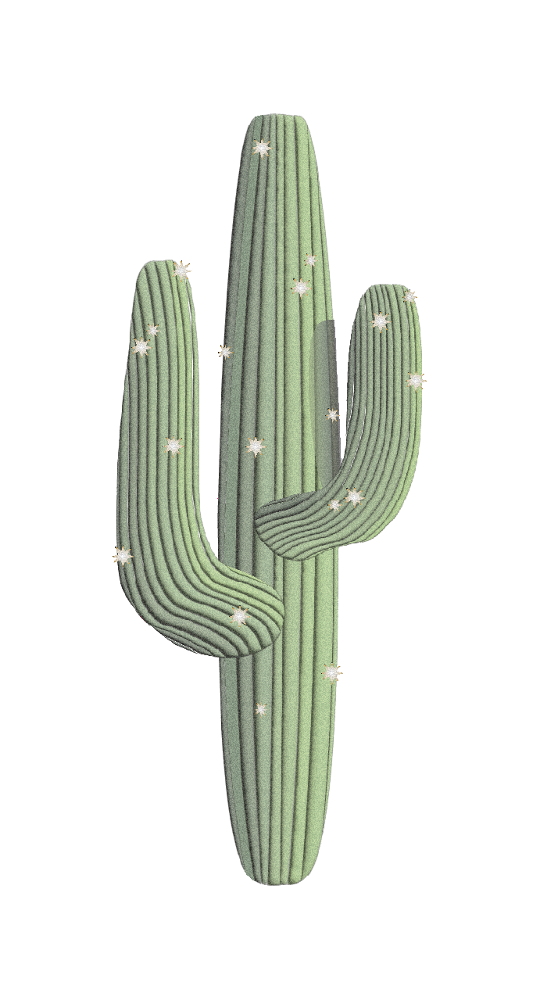

I have been experimenting with creating folk and western iconography as graphics.

I made this Day in the Life infographic to showcase my thoughts, feelings, and anxieties in my daily life.This poster explores post-modern themes while campaigning against the dairy industry.